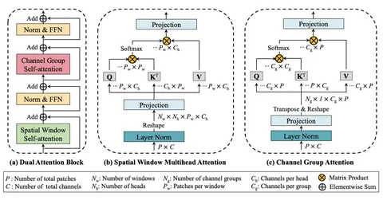
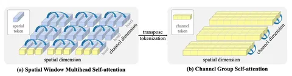

Одна из актуальных задач персепшна — разработка архитектуры, способной одновременно улавливать глобальный контекст и эффективно обрабатывать изображения высокого разрешения. iGPT, методы оптимизации и другие современные подходы чаще всего заключаются в поиске компромисса между качеством, полнотой контекста и вычислительной сложностью.
Сегодня разберём статью о принципиально новом механизме селф-аттеншна на уровне всего изображения — DaViT. В отличие от ViT и его модификаций, работающих с пикселями или патчами, это решение учитывает глобальный контекст, сохраняя при этом вычислительную эффективность относительно пространственного размера изображения.
В основе модели — всё тот же трансформер ViT, но с дополнительной особенностью. Токен всего канала изображения хранится в специальных channel-токенах. По сути это транспонированная версия spatial-токенов.
Рассмотреть архитектуру в подробностях можно на верхней схеме. Она включает два трансформер-блока: пространственного и группового селф-аттеншнов. Благодаря попеременному применению двух этих типов внимания, модель одновременно улавливает и локальные небольшие взаимодействия, и глобальные изменения на уровне всего изображения. На нижней схеме — механизм внимания модели.
Кроме того, DaViT работает не квадратично, как ViT и Swin, а за линейное время от размера токена. Этого удалось добиться, группируя channel-токены. В результате DaViT обогнала Swin и другие топовые модели по скорости и качеству на задачах классификации, детекции и сегментации.
Без обучения на дополнительных данных версии ВDaViT-Tiny (28,3M параметров), DaViT-Small (49,7M) и DaViT-Base (87,9M) продемонстрировали 82,8%, 84,2%, и 84,6% — топ-1 точности ImageNet-1K на момент публикации. При дальнейшем масштабировании DaViT на 1,5B парах «текст+изображение» DaViT-Gaint достигает 90,4% точности.
Код доступен на GitHub авторов.
Разбор подготовил
404 driver not found

